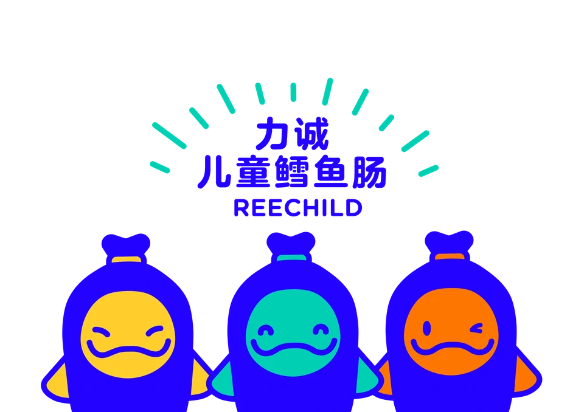
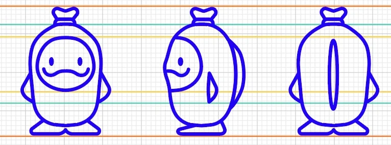
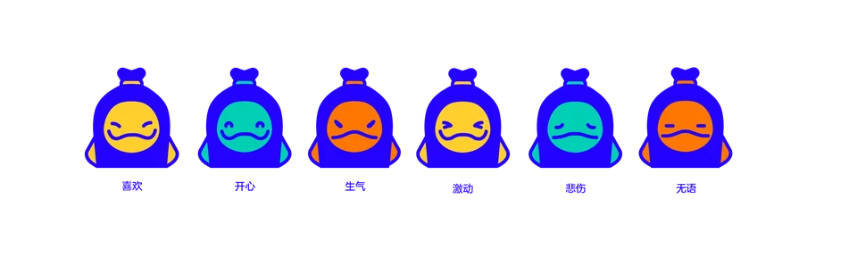
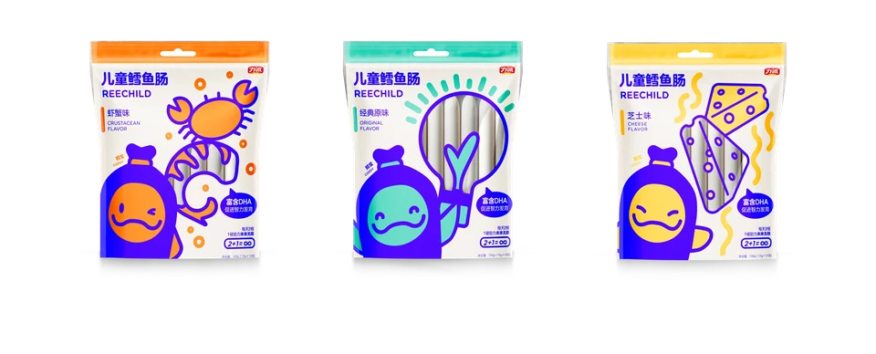
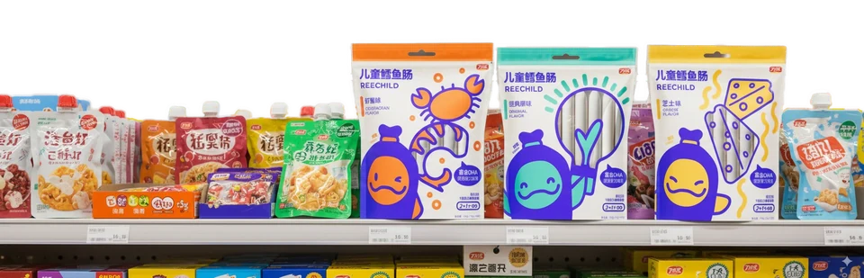
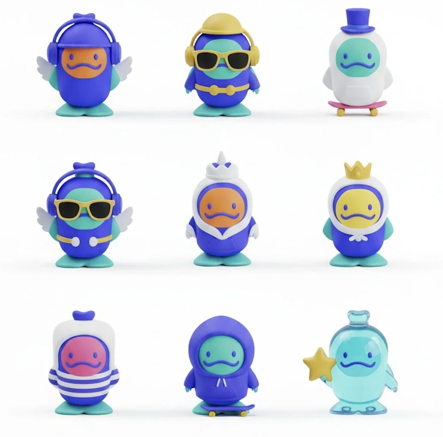
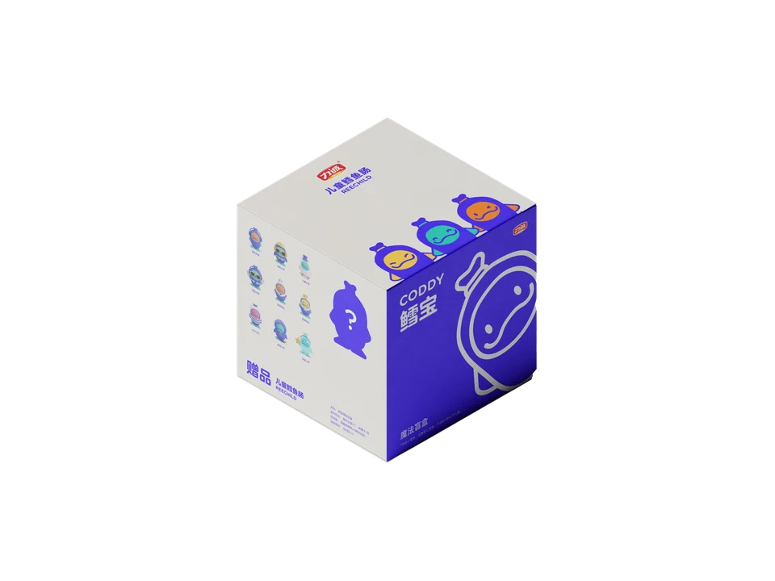
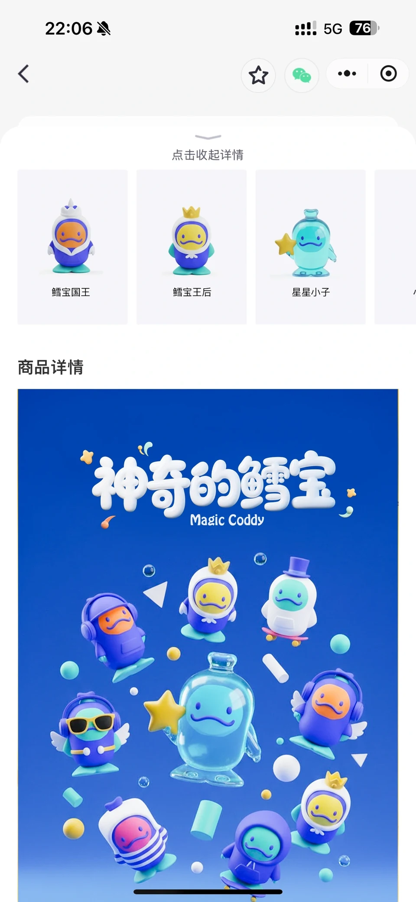
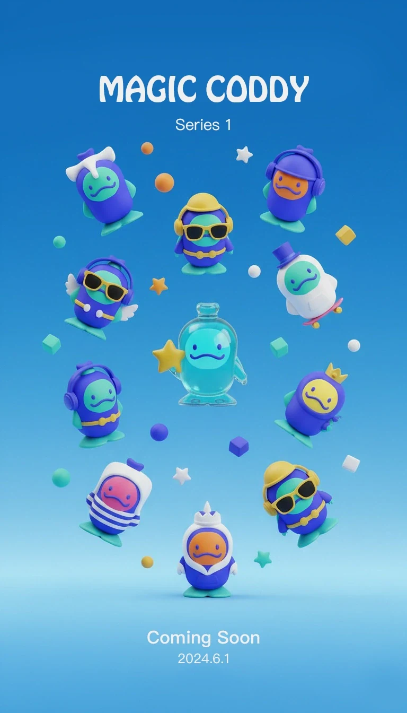

CHARACTER & IP / 2024.10
力诚儿童鳕鱼肠


为力诚儿童鳕鱼肠设计“鳕宝 CODDY”系列 IP 及品牌视觉规范。鳕宝是一群穿着香肠外衣的鳕鱼宝宝，以圆润轮廓、微笑表情和活泼配色传达亲切、快乐的性格，并通过不同表情与装扮丰富角色形象。


系列包装围绕虾蟹味、经典原味与芝士味展开，将橙、绿、黄三种辅助色分别结合食材图形，形成统一又易于区分的产品系列。角色与辅助图形共同构成包装的视觉语言，并延伸至货架陈列效果展示。


潮玩设计在统一造型基础上，通过耳机、墨镜、皇冠、滑板等配件赋予鳕宝不同身份，形成“神奇的鳕宝”盲盒系列，并延伸至盲盒包装、宣传海报和数字界面展示。



